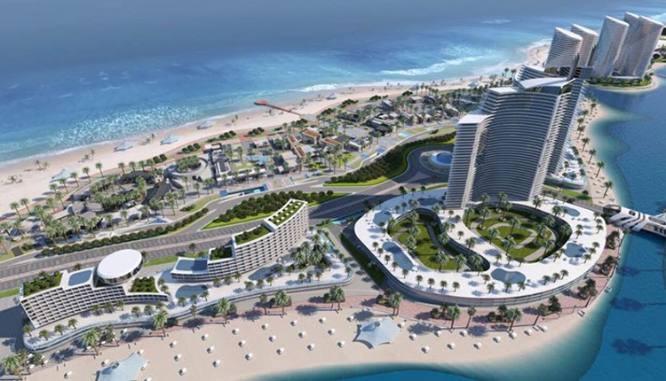

أبرز إنجازات المشروع
مدينة عالمية متكاملة
تتميز مدينة العلمين الجديدة بأنها ليست فقط مدينة سياحية، بل هي مدينة متكاملة تضم مناطق سكنية، ومراكز أعمال، ومنشآت خدمية، مما يجعلها وجهة استثمارية عالمية

الأبراج الشاهقة والمنطقة السياحية
تم بناء مجموعة من الأبراج الفندقية والسكنية الفاخرة، التي تطل على البحر مباشرة، ومن بينها أبراج العلمين الشاهقة، التي تعكس الطابع الحديث والمعماري الفريد للمدينة.
ممشى سياحي عالمي وشواطئ مفتوحة
تم إنشاء ممشى سياحي يمتد لعدة كيلومترات على طول الساحل، ليكون وجهة مميزة للسائحين والمقيمين، بالإضافة إلى توفير شواطئ مفتوحة ومنطقة سياحية متكاملة تستقطب الزوار من داخل وخارج مصر.
شبكة طرق ومواصلات حديثة
تم تنفيذ شبكة طرق متطورة تربط المدينة بباقي المحافظات، بالإضافة إلى إدخال وسائل نقل متقدمة مثل القطار الكهربائي السريع والمونوريل، لتسهيل الوصول إليها وجذب المزيد من الاستثمارات.
الحي اللاتيني والمنطقة الثقافية
تم بناء الحي اللاتيني، الذي يتميز بطراز معماري مستوحى من القاهرة الخديوية والإسكندرية القديمة، ليكون مركزًا ثقافيًا وسكنيًا متكاملًا، بجانب إنشاء دار أوبرا، ومتاحف، ومراكز ثقافية، تعزز الجانب الفني والحضاري للمدينة.
منطقة الأعمال والاستثمار
تضم المدينة منطقة أعمال متطورة تستهدف جذب الشركات العالمية، فضلًا عن إقامة جامعات دولية، ومؤسسات تعليمية عالية المستوى، لتعزيز الاستثمار في المجالين التعليمي والتجاري.
مدينة طبية ومستشفيات عالمية
تضم العلمين الجديدة مدينة طبية متكاملة تحتوي على مستشفيات مجهزة بأحدث التقنيات، ومراكز علاجية متخصصة، مما يجعلها واحدة من أهم الوجهات الصحية في الشرق الأوسط.